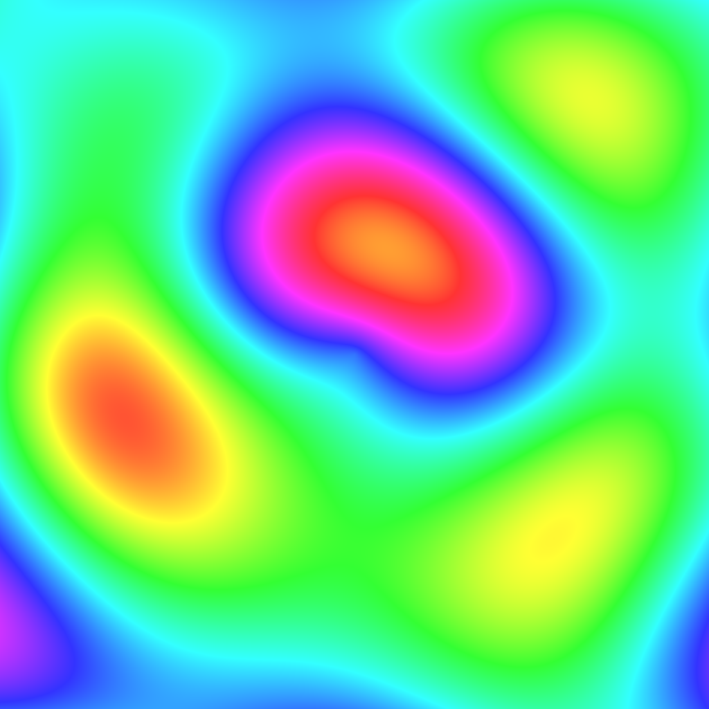

🧮 Lesson 5.4: Compute Shaders — General-Purpose GPU Work
The GPU isn't only for drawing. With compute shaders you can run arbitrary, massively parallel work on it — simulations, image processing, procedural generation, particle systems, culling — outside the draw pipeline entirely. If Module 3 taught you to spread work across CPU cores, this lesson spreads it across the GPU's thousands of cores, and captures the result directly.
🎯 Learning Objectives
By the end of this lesson, you will be able to:
- Explain what a compute shader is and how it differs from vertex/fragment shaders
- Write a
.computekernel with[numthreads]andSV_DispatchThreadID - Write to a
RWTexture2Dand read/write aComputeBuffer/GraphicsBuffer - Dispatch a kernel from C# and choose the right thread-group count
- Manage GPU resources (
enableRandomWrite,Release) correctly - Recognise the workloads where compute shaders win
Estimated Time: 75 minutes · Prerequisite: Lesson 5.2 (HLSL) and Module 3 (parallel thinking)
In This Lesson
What Is a Compute Shader?
A vertex or fragment shader is locked into the rendering pipeline — it runs per vertex or per pixel, when the GPU draws. A compute shader has no such role: it's a program you launch on the GPU to do whatever you want, reading and writing arbitrary buffers and textures. It's the GPU as a general parallel processor.
Why bother? Because the GPU has thousands of tiny cores. For problems that are "do the same simple thing to a million elements" — every pixel of an image, every particle in a system, every cell of a simulation grid — the GPU annihilates the CPU. The catch is the same discipline Module 3 drilled: the work must be highly parallel and data-oriented, and getting results back to the CPU costs (so ideally you keep them on the GPU and render them directly).
📖 Definition
A kernel is a compute shader's entry-point function (marked with #pragma kernel). You dispatch a kernel to run across a grid of threads; each thread handles one element (one pixel, one particle) and knows its own coordinates.
Kernels & Thread Groups
When you dispatch, the GPU runs the kernel across a 3D grid of threads, organised into thread groups. The [numthreads(x,y,z)] attribute sets how many threads are in one group; your C# Dispatch(groupsX, groupsY, groupsZ) call sets how many groups. Total threads = groups × threads-per-group.
numthreads sets threads-per-group; Dispatch sets the group count; each thread reads its global coordinate from SV_DispatchThreadID and processes one element.Writing the Kernel
A compute shader is a .compute asset (right-click ▸ Create ▸ Shader ▸ Compute Shader). Here's a complete kernel that fills a texture with an animated plasma — each thread computes one pixel's colour from its coordinates:
#pragma kernel CSMain // declare the kernel entry point
RWTexture2D<float4> Result; // the texture we WRITE (RW = read/write)
float Time;
uint Width, Height;
float3 hsv2rgb(float3 c)
{
float3 p = abs(frac(c.xxx + float3(0.0, 2.0/3.0, 1.0/3.0)) * 6.0 - 3.0);
return c.z * lerp(float3(1,1,1), saturate(p - 1.0), c.y);
}
[numthreads(8,8,1)] // 8×8 = 64 threads per group
void CSMain (uint3 id : SV_DispatchThreadID) // id = this thread's global (x,y,z)
{
float2 uv = float2(id.x / (float)Width, id.y / (float)Height);
float2 p = uv * 6.0 - 3.0;
// interference of several sine waves → a smooth plasma field
float v = sin(p.x*1.5 + Time) + sin(p.y*1.7)
+ sin((p.x+p.y)*1.1) + sin(length(p)*2.0);
v += sin(p.x*0.5 + sin(p.y*0.8)*2.0);
float3 col = hsv2rgb(float3(frac(v*0.12 + 0.5), 0.8, 1.0));
Result[id.xy] = float4(col, 1.0); // write this pixel
}RWTexture2D is a texture the shader can write (the RW prefix — an ordinary Texture2D is read-only). SV_DispatchThreadID gives each thread its unique global coordinate, so id.xy is exactly the pixel this invocation owns. No loop — the GPU runs a million of these at once.
Dispatching from C#
On the C# side you create a writable RenderTexture, wire up the kernel's parameters, and dispatch enough groups to cover the image:
using UnityEngine;
public class PlasmaCompute : MonoBehaviour
{
public ComputeShader compute; // assign the .compute asset
public RawImage target; // a UI RawImage to show it (optional)
RenderTexture rt;
void Start()
{
int w = 1024, h = 1024;
// A RenderTexture a compute shader can write needs enableRandomWrite.
rt = new RenderTexture(w, h, 0) { enableRandomWrite = true };
rt.Create();
int kernel = compute.FindKernel("CSMain");
compute.SetTexture(kernel, "Result", rt);
compute.SetInt("Width", w);
compute.SetInt("Height", h);
}
void Update()
{
int kernel = compute.FindKernel("CSMain");
compute.SetFloat("Time", Time.time);
// groups = imageSize / numthreads → 1024 / 8 = 128
compute.Dispatch(kernel, 1024 / 8, 1024 / 8, 1);
if (target != null) target.texture = rt; // show the GPU result directly
}
void OnDestroy()
{
if (rt != null) rt.Release(); // free the GPU texture
}
}Two must-dos: set enableRandomWrite = true on the RenderTexture (or the GPU can't write it), and Release() it when done. Notice the result never comes back to the CPU — we hand the RenderTexture straight to the UI, so the data stays on the GPU where it's fast. Dispatching every frame with Time.time animates it.
The Result
Here is that exact kernel's output — a real capture of the RenderTexture the compute shader wrote, one thread per pixel across a million pixels:

CSMain kernel above, dispatched over a 1024×1024 grid. Every pixel was computed in parallel on the GPU from its own coordinates; this is the raw RenderTexture, saved directly.This is the payoff of the whole approach: a million independent colour computations, done in a fraction of a millisecond, never touching the CPU. Swap the maths for a fluid step, a reaction-diffusion update, or a heightmap and the same structure drives real simulations.
Beyond Textures: Buffers
Textures are ideal for image-shaped data, but compute shaders shine on arbitrary data too — thousands of particle positions, physics bodies, boids. For that you use a GraphicsBuffer (the modern form; ComputeBuffer is the older equivalent): a raw GPU array of structs your kernel reads and writes.
struct Particle { public Vector3 pos; public Vector3 vel; } // must match HLSL layout
// stride = bytes per element (6 floats × 4 = 24)
var buffer = new GraphicsBuffer(GraphicsBuffer.Target.Structured, count, sizeof(float) * 6);
buffer.SetData(particles); // upload
compute.SetBuffer(kernel, "Particles", buffer);
compute.Dispatch(kernel, Mathf.CeilToInt(count / 64f), 1, 1);
// buffer.GetData(particles); // read back ONLY if you must (slow)
buffer.Release(); // always free itIn the kernel that's a RWStructuredBuffer<Particle> Particles;. The golden rule mirrors Module 3: keep the data on the GPU. Reading a buffer back with GetData stalls until the GPU finishes and copies across the bus — fine occasionally, poison every frame. Best of all, a GraphicsBuffer of positions can be fed straight into Graphics.RenderMeshIndirect to draw millions of instances the CPU never even sees.
⚠️ Struct layout must match
The C# struct and the HLSL struct must have identical field order and sizes, and the stride must be exact. A mismatch reads garbage — one of the classic compute-buffer bugs. Keep them side by side and count the bytes.
When to Use Compute
Reach for a compute shader when the work is massively parallel, data-heavy, and ideally stays on the GPU:
- Image processing — blur, bloom, custom filters, histograms.
- Particle & boid systems — tens of thousands of agents updated and drawn without CPU round-trips.
- Simulations — fluids, cloth, reaction-diffusion, heightfields, cellular automata.
- Culling & LOD — GPU-driven visibility for huge scenes (what the GPU Resident Drawer from Lesson 2.4 does under the hood).
- Procedural generation — noise fields, meshes, textures built on the GPU.
If the work is small, branchy, or you need the answer back on the CPU immediately, a Burst job (Module 3) is often the better tool. Compute wins when the parallelism is enormous and the result feeds straight back into rendering.
Hands-on Challenge
🏋️ Exercise 1: Run and remix the plasma
Objective: Get a compute shader running and prove you understand the dispatch.
- Create the
CSMaincompute shader and thePlasmaComputescript; assign the asset and a UIRawImage; press Play. - Change
[numthreads(8,8,1)]to[numthreads(16,16,1)]. What must you change in theDispatchcall to still cover 1024×1024? (Hint: groups = size / numthreads.) - Add a
float Scaleparameter and multiplypby it; expose a slider to zoom the plasma.
✅ Dispatch answer
With numthreads(16,16,1) each group covers 16 pixels per axis, so you need 1024 / 16 = 64 groups: compute.Dispatch(kernel, 64, 64, 1). Dispatch the wrong count and you either miss the right/top edge (too few groups) or waste work off-image (too many).
🏋️ Exercise 2: Compute or job?
For each, choose a compute shader or a Burst job: (a) blur a full-screen image every frame; (b) run pathfinding for 8 enemies and read the paths back on the CPU; (c) update 200,000 GPU particles and draw them.
✅ Answers
(a) Compute — image-shaped, huge parallelism, stays on GPU for rendering. (b) Burst job — small count, branchy, and you need results on the CPU immediately. (c) Compute — massive parallelism and the positions feed straight into indirect drawing, no CPU round-trip.
🎯 Quick Quiz
Question 1: How does a compute shader differ from a fragment shader?
Question 2: With [numthreads(8,8,1)] and a 1024×1024 image, how many groups do you dispatch?
Question 3: Why avoid calling GetData on a buffer every frame?
Summary
🎉 Key Takeaways
- A compute shader runs general parallel work on the GPU's thousands of cores, outside the draw pipeline.
- A kernel (
#pragma kernel) runs across a grid:[numthreads]sets threads-per-group,Dispatchsets group count,SV_DispatchThreadIDgives each thread its coordinate. - Write to a
RWTexture2D(needsenableRandomWrite) or aGraphicsBuffer/ComputeBuffer(matching struct layout). - Dispatch groups = size / numthreads (rounded up); always
Release()GPU resources. - Keep results on the GPU — feed textures/buffers straight into rendering; avoid per-frame
GetDatastalls. - Use compute for image processing, particles, simulations, culling, and procedural generation; use Burst jobs for small, branchy, CPU-bound work.
🚀 What's Next?
You've now touched every rendering layer — the frame, HLSL, custom passes, and compute. In Lesson 5.5 you'll combine the shader and renderer-feature skills into the module's mini-project: a complete custom full-screen post-process effect, injected into URP and rendered live.
🧮 The GPU, unchained
One kernel, a million threads, results that never leave the GPU. Compute shaders turn the graphics card into the most parallel processor in the machine — for far more than drawing.